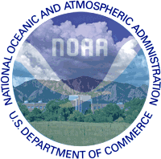

|  |
ESRL Physical Sciences Research Review9-12 March 2010 • Boulder, CO |
Laboratory scientific reviews are conducted every four years to evaluate the quality, relevance, and performance of research conducted in OAR laboratories to both internal and external interests, and to help strategically position the laboratory in its planning of future science. These reviews are intended to ensure that OAR laboratory research is linked to the National Oceanic and Atmospheric Administration (NOAA) Strategic Plan, relevant to NOAA Research mission and priorities, and consistent with NOAA planning, programming, and budgeting.
This review covers physical sciences research at ESRL's Global Systems Division and Physical Sciences Division over the past four years.
Theme #1: Climate, Weather, and Water Physics
Supporting NOAA's mission to provide better projections of future climate as well as short term forecasts of extreme events, requires improved understanding of physical processes in the Earth system. These include:
- quantifying air-sea interactions, particularly those associated with high-wind situations;
- quantifying the land-atmosphere-cloud processes that control energy budgets in the rapidly changing Arctic;
- improving the representation of boundary layer processes, which mediate the exchange of carbon dioxide with the surface and influence air quality;
- quantifying the roles of key physical processes in modulating the water vapor budget, including transport and precipitation;
- examining global teleconnections, particularly from tropical regions that influence regional climate; and
- assessing mechanisms that govern the regional and global transport of atmospheric chemical species and black carbon, which affect regional air quality, precipitation processes, and climate.
Theme #2: Modeling, Data Assimilation, and Advanced Computing
Linking observations and physical processes through data assimilation is the foundation for numerical modeling. NOAA's Earth System Research Laboratory (ESRL) produces global and regional modeling and data assimilation systems coupling atmospheric, ocean, chemistry, land-use, and other earth system components of the NOAA operational suite running at the National Centers for Environmental Prediction and at Weather Forecast Offices. These models support NOAA's broad weather warning and forecast mission as well as other federal, state, and local agencies for such applications as fire weather, the nation's space program, and defense tactical operations. ESRL also develops advanced, high-performance computer architectures as the means for handling the enormous computational demands of global-scale environmental models. This modeling, assimilation, and advanced computing research are critical for NOAA's role in environmental monitoring and for producing forecast guidance from minutes to millennia.
Theme #3: Climate, Weather, and Water Services
Bridging the gaps between science and decision-making is critical for an informed society to anticipate and respond to weather and climate extremes and their impacts. Successful climate, weather, and water services must fully utilize the capacity of the nation's physical science research enterprise to meet the environmental challenges posed by climate variability and change, particularly with respect to extreme events. Observations, process studies and applications-research are combined at ESRL to advance the delivery of climate, weather and water information by NOAA to support policy and decision making. This is aided by ESRL's hosting of the National Integrated Drought Information System (NIDIS) program office and the Western Water Assessment (WWA), which allows close interaction of ESRL scientists with their staff who are addressing the immediate needs of decision makers. ESRL's investments in attribution research helps inform society on how to invest in critical infrastructure in risk-prone areas, and puts current climate extremes in the context of long-term change. Many of ESRL's efforts focus at the watershed scale, where the impact on people and the economy are the greatest. In supporting these efforts, ESRL has created a delivery system of research products that utilizes and adds value to routine reanalysis data and develops new methods to improve predictions, such as Reforecasting, applying Ensemble Kalman Filter methods to historic data and operating the Hydrometeorology Testbed (HMT) program to deliver information at watershed scales.
Theme #4: Technology Transfer and Outreach
Research and development advances are essential to enhancing more sophisticated and informed services. ESRL's mission includes the transfer of research developments to operations and applications in order to fill the gaps identified by the stakeholders and decision makers using NOAA's weather and water products and services. The formalized transition of validated models, verification and information systems, data analysis tools, information products, and observing systems into operational use by public and private sector forecasters and decision makers for the protection of life and property is at the heart of ESRL science and technology activities. ESRL develops sophisticated tools for improving the weather forecast process, operates and participates in research testbeds for providing the infrastructural and testing bridge between research and operations, develops and improves specific services for high impact weather decision support (such as to the aviation community), and conducts outreach and education programs employing their technologies (such as Science On a Sphere and Virtual Worlds) to provide the public with a better understanding of NOAA's scientific research.
Theme #5: Earth System Observation and Analysis
At the heart of better understanding the Earth system are reliable observations of critical processes from watershed to global scales and from minutes to years. ESRL's observational efforts seek to improve the characterization of physical processes in its coupled modeling systems and provide improved statistical and conceptual models of the Earth system. To this end, ESRL supports an array of ground- and ship-based observing systems deployed in polar regions, at sea, and across the U.S. In addition ESRL maintains a climate diagnostics capability that produces a suite of products used by the climate research community and has led to the development of a new historical reanalysis using only surface pressure observations. The ability of individual observing systems and analyses to improve our understanding and modeling of the earth system must be evaluated within the context of currently available observations. ESRL develops, tests, and evaluates newly emerging observing systems such as piloted and unmanned airborne systems. ESRL examines the relative impact of existing data systems using Observing System Experiments (OSEs) and conducts Observing System Simulation Experiments (OSSEs) to estimate the potential impact of proposed new observing systems.
Presentations
Day 1: March 9, 2010
| Time | Title | Speaker |
|---|---|---|
| 8:00 | Welcome: Introduction and Charge to Reviewers | Richard Spinrad |
| 8:05 | Keynote by Sr. Science Advisor to NOAA Administrator | Paul Sandifer |
| 8:20 | Overview of NOAA Research Planning | Craig McLean |
| 8:35 | Welcome; ESRL Organization Overview, Physical Sciences Research and Priority Setting | Alexander MacDonald |
| 8:50 | New Advances: Global Assimilation and Modeling | Jeffrey Whitaker |
| New Advances: Global Assimilation and Modeling | Jin Lee | |
| 9:10 | ESRL Research - PSD | William Neff |
| ESRL Research - GSD | Steven Koch |
| Theme #1: Climate, Weather and Water Science
Co-Leads: Chris Fairall, Jim Wilczak | ||
| 10:30 | Climate, Weather and Water Science Overview | Chris Fairall |
|---|---|---|
| 10:40 | Air Sea/Ice Fluxes | Chris Fairall |
| 10:55 | Misrepresentation of Tropical SSTs in Climate Models | Prashant Sardeshmukh |
| 11:10 | Diagnosing Times Scales of Atmospheric Moisture Transport | Matt Newman |
| 11:25 | Landfalling Impacts of Atmospheric Rivers: From Extreme Events to Long-term Consequences | Paul Neiman |
| 11:40 | Summary & Way Forward | Jim Wilczak |
| Theme #2: Modeling, Data Assimilation, and Advanced Computing
Co-Leads: Stan Benjamin, Zoltan Toth | ||
| 1:45 | Overview and Global Modeling | Stan Benjamin |
| 2:05 | Data Assimilation and Rapid Cycling Numerical Weather Prediction | Steve Weygandt |
| 2:25 | WRF-Chem &8212; Development and Applications (Alaska Fires .mov) (Dispersion .avi) |
Georg Grell |
| 2:40 | Forecast Uncertainty/Applications | Paul Schultz |
| 2:50 | Advanced Computing | Mark Govett |
| 3:00 | Summary and Way Forward | Zoltan Toth |
Day 2: March 10, 2010
| Theme #3: Climate, Weather and Water Services
Co-Leads: Randy Dole, Robert Webb | ||
| Time | Title | Speaker |
|---|---|---|
| 8:00 | Overview | Randy Dole |
| 8:15 | Research to Improve Climate, Weather and Water Services | Marty Ralph |
| 8:30 | Development of an Attribution Services Capability | Martin Hoerling |
| 8:45 | The Western Water Assessment | Kristen Averyt |
| 9:00 | The National Integrated Drought Information System | Roger Pulwarty |
| 9:15 | Summary & Way Forward | Robert Webb |
| Theme #4: Technology Transfer and Outreach Activities
Co-Leads: Sher Schranz, Jennifer Mahoney | ||
| 1:15 | Overview | Sher Schranz |
| 1:50 | Science Transition Processes | Mike Kraus |
| 1:30 | Weather Information Display Systems | Tom Lefebvre |
| 2:10 | Outreach and Education | Beth Russell |
| Outreach and Education | Eric Hackathorn | |
| 2:30 | Summary & Way Forward | Jennifer Mahoney |
Day 3: March 11, 2010
| Theme #5a: Weather System Observations and Analysis
Lead: Bill Moninger | ||
| Time | Title | Speaker |
|---|---|---|
| 8:00 | Overview | Bill Moninger |
| 8:20 | Unmanned Aircraft Systems | Sara Summers |
| 8:35 | GPS-Met | Seth Gutman |
| 8:50 | Summary & Way Forward | John Brown |
| Theme #5b: Climate System Observations and Analysis
Lead: Marty Ralph | ||
| 9:00 | Overview | Randy Dole |
| 9:30 | Polar (Arctic) Observations and Processes | Taneil Uttal |
| 9:10 | Historical Reanalysis | Gil Compo |
| 9:45 | Summary & Way Forward | Marty Ralph |
Posters
Day 1: March 9, 2010
| Theme #1: Climate, Weather and Water Science | |
| Physical Influences on Satellite-Based Sea Surface Temperature Measurements and Uncertainties | Gary Wick |
| Large-Scale Air-Sea Interaction: Remote Influences on Tropical Pacific Variability | Michael Alexander, Antonietta Capotondi, Jamie Scott, Amy Solomon, De-Zheng Sun |
| Scale Interactions within the Madden-Julian Oscillation | George N. Kiladis, Patrick T. Haertel, and Katherine H. Straub |
| Measurement/Parameterization of Air-Sea Gas Transfer | Jeffrey Hare |
| Evidence for Deposition of Black Carbon in the Springtime Arctic | J.R. Spackman, R.-S. Gao, W.D. Neff, J.P. Schwarz, L.A. Watts, D.W. Fahey, J.S. Holloway, T.B. Ryerson, J. Peischl, O.R. Cooper, C.A. Brock |
| Air-Sea Fluxes in Hurricane Models | J.-W. Bao, C. W. Fairall, S. A. Michelson, and L. Bianco |
| Ocean Acoustic Mapping of Hurricane Wind Fields | Alexander Voronovich and Cécile Penland |
| Orographic Precipitation Processes | Paul J. Neiman, Allen B. White, F. Martin Ralph, Brooks E. Martner, David E. Kingsmill, Ellen M. Sukovich, Mimi Hughes |
| Impacts of Asian Dust on Cloud Microphysics and Precipitation during an Atmospheric River during the CalWater Early Start Campaign | Andrew P. Ault, Jessie M. Creamean, Christopher R. Williams, Cassandra J. Gaston, F. Martin Ralph, and Kimberly A. Prathe |
| Processes in the Cloud-Atmospheric Boundary Layer-Surface (CAS) System Impacting Arctic Surface Energy Fluxes | P. Ola G. Persson, M. Shupe, A. Solomon, A. Grachev, and T. Uttal |
| Hydrometeorological Testbed (HMT) Ensemble Modeling | Isidora Jankov and Huiling Yuan |
| Parameterization of Land-Surface Processes in the Rapid Update Cycle (RUC) and Rapid Refresh (RR) | Tatiana Smirnova, Stan Benjamin, and John Brown |
| Theme #2: Modeling, Data Assimilation, and Advanced Computing | |
| Towards an Earth System Model: Chemistry in the FIM
and its effect on forecasting weather and air quality | Georg A. Grell, Tom Henderson, Stuart A McKeen, Jian-Wen Bao and Saulo Freitas |
| Space and Time Multiscale Analysis System
(STMAS) | Yuanfu Xie, Steven E. Koch, Steve Albers, and Huiling Yuan |
| Rapid Refresh (RR) and
High Resolution Rapid Refresh (HRRR) | Ming Hu, Tanya Smirnova, Curtis Alexander, Steve Weygandt, Stan Benjamin, John Brown, and Joe Olson |
| Enabling Science with
Graphical Processing Units (GPUs) | Jacques Middlecoff and Mark Govett |
| Probabilistic Thunderstorm Guidance from a Time-Lagged Ensemble of High Resolution Rapid Refresh (HRRR) Forecasts | Curtis Alexander, Doug Koch, Steve Weygandt, Stan Benjamin |
| Improving the Accuracy of Satellite Moisture Measurements | Daniel L. Birkenheuer and Seth I. Gutman |
| NIM: Nonhydrostatic Icosahedral Model | Jin Lee and A. E. MacDonald |
| High Performance Computing at ESRL: Supporting the Computational Needs of ESRL's Scientists and Modelers | Craig Tierney2, Leslie Hart1, Pam Weber1, Lee Cohen2, Chris Harrop2, Ed Moxley3, Forrest Hobbs4, Nathan Dauchy4,, Eric Schnepp4, Glen Pankow |
| Progress Made Towards Including Wildfire in Real-Time Cloud Resolving Forecasts at NOAA/ESRL | Steven Peckham, Georg Grell, Saulo Freitas, Martin Stuefer, Stuart McKeen Tanya Smirnova, Stan Benjamin, Karla Longo and William "Ruddy" Mell |
| New ways of discretizing the atmosphere/ocean for earth system prediction | Rainer Bleck, Jian-Wen Bao, Stan Benjamin, Jin Lee, Sandy MacDonald, Jacques Middlecoff, Tom Henderson, John M. Brown, Shan Sun and Ning Wang |
| Progress toward an ESRL earth system model: Coupling FIM to an isopycnal-isocahedral ocean | Rainer Bleck and Shan Sun |
| Ensemble Kalman Filter Development at ESRL | Jeffrey S. Whitaker, Thomas M. Hamill, Gilbert P. Compo, Philip Pegion |
| Parameterization of Diabatic Processes in FIM:
Implementation, Evaluation and Improvement
| J. -W. Bao, G. A. Grell, J. M. Brown, M. Fiorino, S. Benjamin, and J. Lee |
Day 2: March 10, 2010
| Theme #3: Climate, Weather and Water Services | |
| The NOAA, California Department of Water Resources and Scripps Hydrometeorology Testbed Legacy Project | Allen White, Marty Ralph, Mike Anderson, Art Hinojosa, Mike Dettinger, and Dan Cayan |
| The NOAA Hydrometeorology Testbed (HMT) Soil Moisture Observing Networks: Linking the Soil to Weather and Climate Processes | Robert Zamora F. Martin Ralph Timothy Schneider |
| Howard Hanson Dam Rapid Response and NOAA's New Mobile Atmospheric River Observatory | Allen White, Scott Abbott, Jesse Leach, Clark King, Jim Jordan, Dan Gottas, Marty Ralph, and Robin Webb |
| Assessment of Extreme Quantitative Precipitation Forecasts and Development of Regional Extreme Event Thresholds Using Data from HMT-2006 and COOP Observers | F. M. Ralph, E. Sukovich, D. Reynolds, M. Dettinger, S. Weagle, W. Clark, P. J. Neiman |
| Integrated Water Resources Observing Systems and Networks | Jim Jordan, R. Cifelli, S. Abbott, K. Clark, T. Coleman, D. Costa, J. Gibson, D. Gottas, D. Hazen, P. Johnston, C. King, D. Kingsmill, J. Leach, F.M. Ralph, T. Schneider, A. White |
| NOAA Hydrometeorology Testbed (HMT) | Tim Schneider, Seth Gutman, Dave Kingsmill, Marty Ralph, Woody Roberts, Isidora Jankov, Allen White, Bob Zamora |
| NIDIS Research and Implementation - Developing Early Warning Information Systems Across Climatic Timescales | James Verdin |
| The U.S. Drought Portal | Michael Brewer and Mark Svoboda |
| WWA, Climate Change in Colorado: A Synthesis to Support Water Resources Management and Adaptation | K.B. Averyt, A. Ray, J.J Barsugli, K. Wolter, M. Hoerling, N. Doesken, B. Udall, R.S. Webb |
| Climate, Growth and Drought Threat to Colorado River Water Supply | Balaji Rajagopalan, Kenneth Nowak, James Prairie, Mar=n Hoerling, Benjamin Harding, Joseph Barsugli, Andrea Ray and Bradley Udall |
| NOAA's Potential Role in Renewable Energy | James Wilczak, M. Marquis, E. Weatherhead, S. Benjamin |
| Applications of HMT Science to "Operational Forecasting" | Woody Roberts, Patricia Miller, Tim Schneider, and GSD/ISB Staff |
| * Physical Sciences Division Tour * | |
| The Climate Response to 2007 Arctic Sea Ice Loss | Martin Hoerling, Judith Perlwitz, Jon Eischeid, Xiao-Wei Quan, TaiYi Xu, and Arun Kumar |
| Using reforecasts to improve probabilistic weather predictions | Tom Hamill, Jeff Whitaker, and Gary Bates |
| Attribution of Evolving North American Climate Conditions | Judith Perlwitz, Martin Hoerling, Jon Eischeid, Taiyi Xu1, and Arun Kumar |
| Prospects for Improving Subseasonal Predictions | Kathy Pegion and Prashant D. Sardeshmukh |
| Seasonal Forecasting of Thermal Stress Conducive to Mass Coral Bleaching Events | C. Penland, L. Matrosova, R.S. Webb, R.S. Pulwarty, G. Liu, C.M. Eakin, S. Lynds, T.R.L. Christensen, S.F. Heron, J.A. Morgan, B.A.A. Parker, W.J. Skirving, A.E. Strong |
| The Impact of Stratospheric Ozone Hole Recovery on Antarctic Climate | Judith Perlwitz, Steven Pawson, Ryan Fogt, Eric Nielsen, William Neff |
| Distinct Causes for Two Principal U.S. Droughts of the 20th Century | Martin Hoerling, Xiao-Wei Quan, and Jon Eischeid |
| PSD Interactive Data Analysis and Plotting Web Pages | Barb DeLuisi, Don Hooper, Greg Keith, Cathy Smith, Tim Coleman, Dan Gottas |
| Distinguishing the roles of natural and anthropogenically forced decadal
climate variability: Implications for prediction | Amy Solomon and Matt Newman |
| Climate variability and the collapse of a Chinook salmon stock | S. T. Lindley, M. Mohr, W. T. Peterson, C. Grimes, J. Stein, J. Anderson, L. W. Botsford, D. Bottom, C. Busack, T. Collier, J. Ferguson, C. Garza, A. Grover, D. Hankin, R. Kope, P. Lawson, A. Low, B. MacFarlane, K. Moore, M. Palmer-Zwahlen, F. B. Schwing, J. Smith, C. Tracy, R. S. Webb, B. Wells, T. Williams |
| Regional Experimental Seasonal Forecast Guidance: A 10-year Track Record in the Southwestern U.S. | Klaus Wolter |
| International Comprehensive Ocean-Atmospheric Data Set (ICOADS) | Scott Woodruff, Sandra Lubker, Steve Worley and Eric Freeman |
| Theme #4: Technology Transfer and Outreach Activities | |
| NOAA Modeling GUI Tools | Jeff Smith |
| AWIPS Technology Transfer | Joanne Edwards |
| What is the FX-Net Program | Jebb Stewart |
| Forecaster X-Window Collaboration System (FXC) | Greg Pratt |
| Network-Enabled Verification Service (NEVS): Improving the Quality of Weather Forecasts for Operational Decisions | Nick Matheson, Missy Petty, Dan Schaffer, Tim Pease, Sean Madine, Geary Layne, Steve Lack, Jennifer Mahoney, and Andy Loughe |
| NOAA Interdisciplinary Scientific Environmental
Technology (ISET) Educational Partnership Program | Tracy Hansen, Chris Harrop, Isidora Jankov, Steve Koch, Tom LeFebvre, MarySue Schultz, Cathy Smith, and David Welsh |
| Getting to Know NOAA: ESRL Education and Outreach | Ann Reiser and Barb DeLuisi |
| Local Analysis and Prediction System (LAPS) Technology Transfer | Steve Albers, Brent Shaw, and Ed Szoke |
| Precision Air Drop System (PADS):
Local Analysis and Prediction System (LAPS) Wind Forecasts
Improve Air Drop Target Accuracy | Linda Wharton, Steven Albers, Daniel Birkenheuer, John McGinley, and John Smart |
| The DTC and Hurricane Modeling Activities | L. Bernardet, L. Nance, S. Bao1, C. Harrop1, N. Surgi, W. Kuo, S. Koch, and B. Brown |
| Personal Weather Advisor (concept idea)
Decision Support in Weather-Sensitive Situations | Paula McCaslin and Kirk Holub |
| ARkStorm - A West Coast Storm Scenario | D. A. Cox; L.M.Jones; F.M. Ralph; M.D. Dettinger; M. Hughes; K. Porter; S.C. Perry; P.L. Barnard; D. Hoover; C.J.Wills; J.D. Stock; W. Croyle; J.C. Ferris; G.S. Plumlee; C.N. Alpers; M. Miller; A. Wein; A. Rose; J. Done; K. Topping |
| * Global Systems Division Tour * | |
| Graphics Processor Units (GPUs) Explained | Mark Govett |